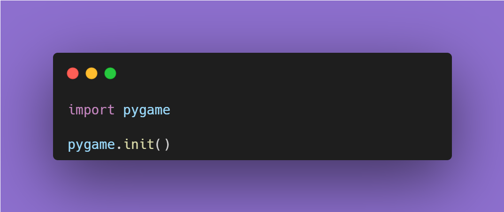

Привет мир!
Этот сайт посвящен нашей игре, Jump it !, в блоке про историю создания, вы можете узнать более точную информацию, а здесь мы расскажем основные ее характеристики
Название - Jump it!- игра создана на pygame. Основной жанр - платформер. Чтобы было легче понять, то Mario, Super Meat Boy, Terraria, созданы в этом же жанре
Главным персонажем является лягушка по имени Роспо